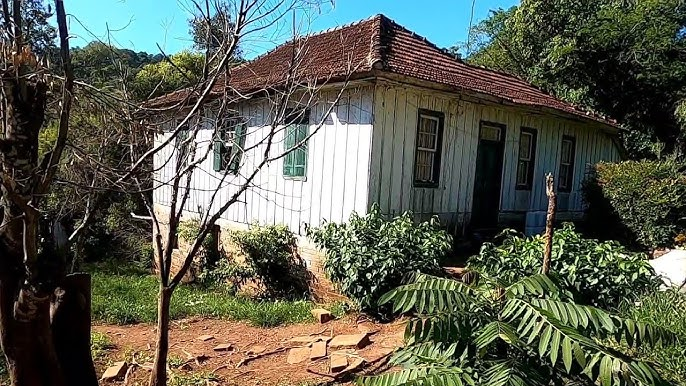
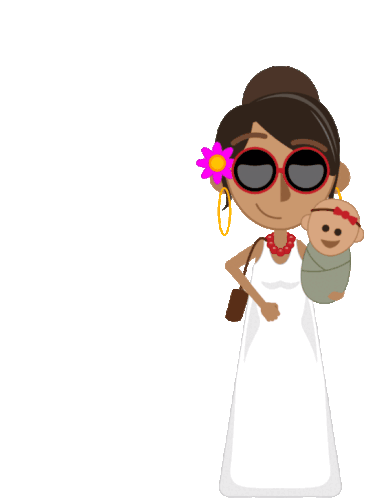
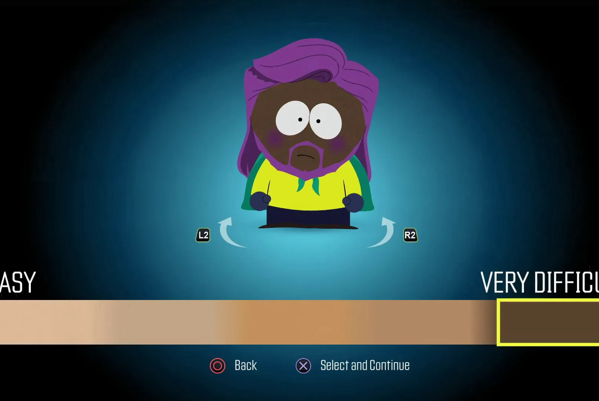
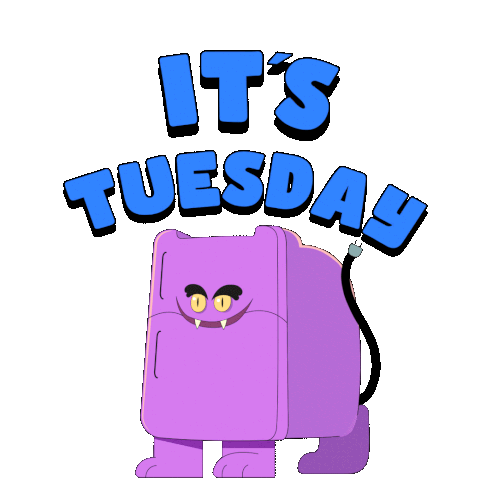
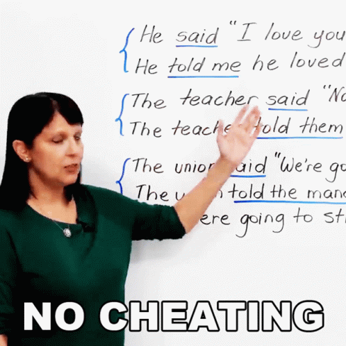
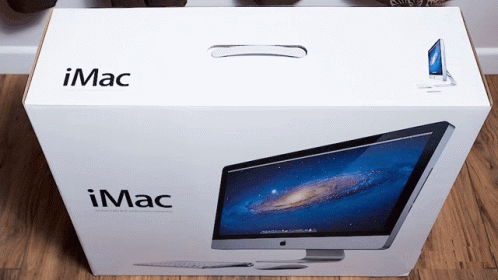

Verbs
The Verb To Be
The verb "to be" is used to describe a state or condition. It changes form depending on the subject.
Present Tense:
I am
You are
He/She/It is
We/You/They are
Past Tense:
I/He/She/It was
You/We/They were
Example:
"I am the new CTO of this company."
Here's the complete conjugation table for the verb "to be" in all major tenses, formatted clearly with examples:
Complete Conjugation Table for "To Be"
Tense | I | You | He/She/It | We | You (pl) | They |
|---|---|---|---|---|---|---|
Present Simple | am | are | is | are | are | are |
Past Simple | was | were | was | were | were | were |
Future Simple | will be | will be | will be | will be | will be | will be |
Present Cont. | am being | are being | is being | are being | are being | are being |
Past Continuous | was being | were being | was being | were being | were being | were being |
Present Perfect | have been | have been | has been | have been | have been | have been |
Past Perfect | had been | had been | had been | had been | had been | had been |
Future Perfect | will have been | will have been | will have been | will have been | will have been | will have been |
Examples for Each Tense:
Present Simple:
"I am a teacher."
"She is at home now."
Past Simple:
"You were late yesterday."
"It was sunny last week."
Future Simple:
"We will be there by 8 PM."
"They will be happy with the results."
Present Continuous:
"He is being careful with the project."
"You are being too loud."
Past Continuous:
"I was being honest when I said that."
"They were being difficult during the meeting."
Present Perfect:
"She has been to Paris three times."
"We have been friends since childhood."
Past Perfect:
"By 2020, I had been working there for 5 years."
"They had been married before they moved."
Future Perfect:
"By next year, you will have been promoted twice."
"She will have been gone for a month by Tuesday."
The Verb To Have
The verb "to have" can express different meanings:
Uses:
Ownership (possessing something)
"She has a beautiful house." Action (necessity or obligation)
"I have to go."Consumption (eating or drinking)
"We had a cold pizza for lunch."Birth (giving birth to a child)
"She had a baby last day." Noun (referring to those who possess something)
"In this game, the haves have an advantage." Inclusion (containing a feature)
"The software has a bug."
Present Tense:
I/You/We/They have
He/She/It has
Past Tense ("Had" for all subjects):
"We had to watch the whole thing."
Complete Conjugation Table for "To Have"
Affirmative Forms
Tense | I/You/We/They | He/She/It | Example Sentences |
|---|---|---|---|
Present Simple | have | has | "I have an idea." / "She has a meeting." |
Past Simple | had | had | "We had breakfast early." |
Future Simple | will have | will have | "They will have results tomorrow." |
Present Continuous | am/are having | is having | "You're having a good day." |
Past Continuous | was/were having | was having | "He was having dinner when I called." |
Present Perfect | have had | has had | "I have had this book since 2020." |
Past Perfect | had had | had had | "She had had the car for only a week before it broke down." |
Future Perfect | will have had | will have had | "By June, we will have lived here for five years." |
Negative Forms
Tense | I/You/We/They | He/She/It | Example Sentences |
|---|---|---|---|
Present Simple | don't have | doesn't have | "It doesn't have batteries." |
Past Simple | didn't have | didn't have | "We didn't have time." |
Future Simple | won't have | won't have | "You won't have problems." |
Question Forms
Tense | I/You/We/They | He/She/It | Example Questions |
|---|---|---|---|
Present Simple | Do...have? | Does...have? | "Do you have a pen?" |
Past Simple | Did...have? | Did...have? | "Did she have the documents?" |
Future Simple | Will...have? | Will...have? | "Will they have enough seats?" |
Special Usage Cases
Possession
Present: "They have our contact information."
Past: "We had no electricity after the storm."
Obligation (have to/had to)
Present: "She has to finish this report today."
Past: "I had to reschedule my appointment."
Experiences
Present Perfect: "He has had three job offers this month."
Past Perfect: "They had had several warnings before the accident."
Actions/Events
Present Continuous: "We're having technical difficulties."
Past Continuous: "You were having a conversation when I arrived."
The Verb To Do
The verb "to do" is used in various contexts:
Present Tense:
I/You/We/They do
He/She/It does
Uses:
Performing an action
"I do yoga on Tuesday mornings." Traveling or visiting a place
"We did Ireland two years ago."Fixing or arranging something
"He can do the flowers for the wedding."Punishing or dealing with someone
"The teacher did him for cheating." Creating or designing something
"He did the new iMac design."
Past Tense ("Did" for all subjects):
"I did my homework."
Complete Conjugation Table for "To Do"
Affirmative Forms
Tense | I/You/We/They | He/She/It | Example Sentences |
|---|---|---|---|
Present Simple | do | does | "I do my homework daily." / "She does yoga." |
Past Simple | did | did | "We did the laundry yesterday." |
Future Simple | will do | will do | "They will do the presentation." |
Present Continuous | am/are doing | is doing | "You're doing great!" |
Past Continuous | was/were doing | was doing | "He was doing repairs all morning." |
Present Perfect | have done | has done | "I have done everything required." |
Past Perfect | had done | had done | "She had done the research before the meeting." |
Future Perfect | will have done | will have done | "By Friday, I will have done all the work." |
Negative Forms
Tense | I/You/We/They | He/She/It | Example Sentences |
|---|---|---|---|
Present Simple | don't do | doesn't do | "It doesn't do justice to the story." |
Past Simple | didn't do | didn't do | "We didn't do anything wrong." |
Future Simple | won't do | won't do | "She won't do the dishes tonight." |
Question Forms
Tense | I/You/We/They | He/She/It | Example Questions |
|---|---|---|---|
Present Simple | Do...do? | Does...do? | "Do you do graphic design?" |
Past Simple | Did...do? | Did...do? | "Did he do his chores?" |
Future Simple | Will...do? | Will...do? | "Will they do the installation?" |
Special Usage Cases
General Activities
Present: "I do volunteer work on weekends."
Past: "They did an amazing job with the project."
Replace Other Verbs
"She does (runs) five miles every morning."
"We did (visited) Rome last summer."
Emphasize Actions
"I do understand your concerns." (present emphasis)
"He did apologize eventually." (past emphasis)
Common Expressions
"How do you do?" (formal greeting)
"That will do." (means "that's enough")
Auxiliary Uses
Questions
"Do you like coffee?"
"Does it work properly?"
Negative Statements
"I don't know the answer."
"She doesn't want to go."
Tag Questions
"You know him, don't you?"
"She works here, doesn't she?"